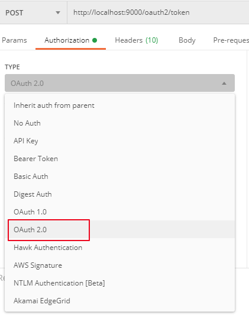
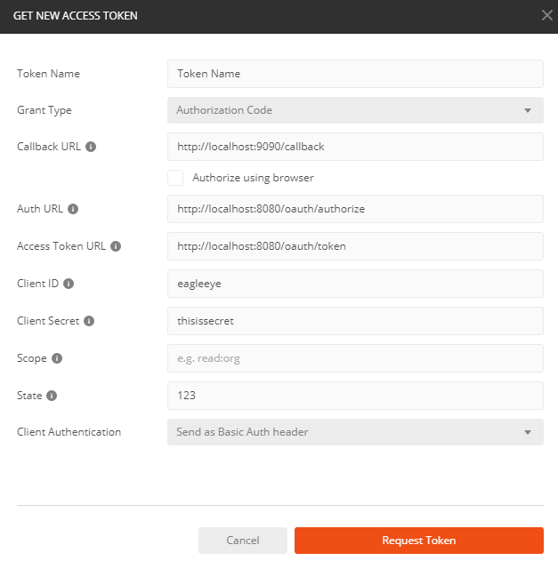
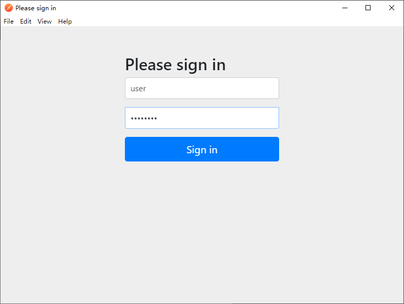
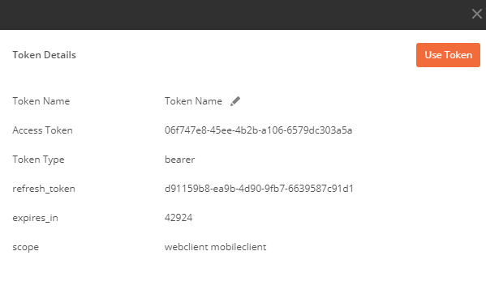
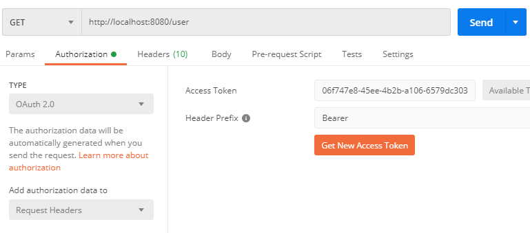

在分布式系统中，授权系统是必不可少的，作为最流行的分布式系统架构 Spring Cloud 提供了对 OAuth2 授权服务器（OAuth2 Provider）的支持。Spring 对与 OAuth2 Provider 的开发支持可以参看 官方文档。但是但是官方对与 OAuth2 Provider 的支持已经过时（Deprecated，但是仍然在发布安全更新），并独立到一个新的项目中：https://github.com/spring-projects-experimental/spring-authorization-server/，但是新的项目还在开发当中，没有正式发布。本文仍然基于老的开发方式进行讲解
Spring Cloud 对与 OAuth2 的支持都集成在 spring.security.oatuh2 包中，使用 Spring 开发 OAuth2 授权服务器，主要需要四个步骤：
@EnableAuthorizationServer 注解该注解会启用 /oauth/authorization 和 /oauth/token 端点，用于获取授权码和 Token
@RestController
@EnableAuthorizationServer
@SpringBootApplication
public class OauthServerApplication {
public static void main(String[] args) {
SpringApplication.run(OauthServerApplication.class, args);
}
}
通过继承AuthorizationServerConfigurerAdapter 注册 Client 信息，要注册的信息包括：Client ID，Client Secret，授权模式，重定向 URL 以及权限范围。
其中 client ID 和 Client Secret 用与 Client Authentication
@Configuration
public class Oauth2Config extends AuthorizationServerConfigurerAdapter {
//...
@Override
public void configure(ClientDetailsServiceConfigurer clients) throws Exception {
clients.inMemory()
.withClient("eagleeye")
.secret("{noop}thisissecret")
.authorizedGrantTypes("authorization_code")
.redirectUris("http://localhost:9090/callback")
.scopes("webclient", "mobileclient");
}
//...
}
在配置了 Client 的信息后，需配置Resource Owner 的相关信息，也就是在 授权服务器需要输入的用户名和密码信息
@Override
protected void configure(AuthenticationManagerBuilder auth) throws Exception {
auth.inMemoryAuthentication()
.withUser("user").password("{noop}password").roles("USER")
.and()
.withUser("admin").password("{noop}password").roles("USER", "ADMIN");
}
在 Client 获取到 Token 之后，就可以使用该 Token 访问 /oauth/token 端点，获取真正的用户信息：
@RequestMapping(value = {"/user"}, produces="application/json")
public Map<String, Object> user(OAuth2Authentication user) {
Map<String, Object> userInfo = new HashMap<>();
userInfo.put(
"user",
user.getUserAuthentication().getPrincipal());
userInfo.put(
"authorities",
AuthorityUtils.authorityListToSet(user.getUserAuthentication().getAuthorities()));
return userInfo;
}
完整的项目代码放在了 GitHub上，下面来测试授权服务器：
使用 Post Man 测试，创建一个 Request，在 Authorization 字段中选择 OAuth 2.0：

然后点击 get access token ，填入 OAuth2 相关的信息：

点击 Request Token， 会跳出 Resource Owner 的授权信息：

输入用户名： “user”，用户名：“password”，点击 “Sign in”
就可以获取到 Access Token：

获取到 Access Token 后，就可以通过 Rest 接口获取用户的信息。点击 Use Token 按钮，请求 /user 就可以获取用户信息：

另外附上 OAuth2 服务器相关的资源：